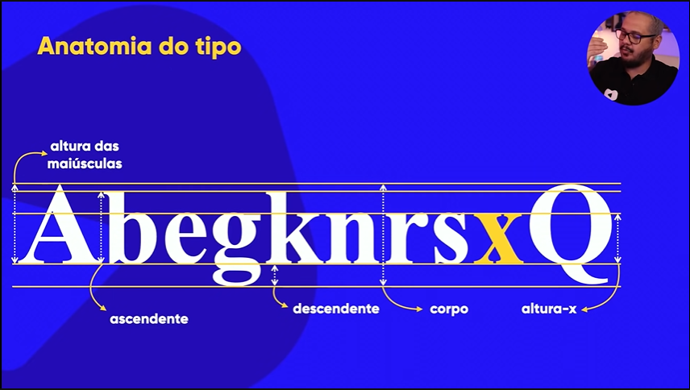
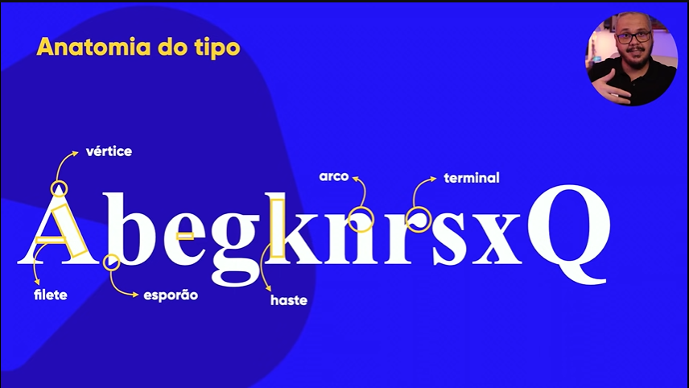
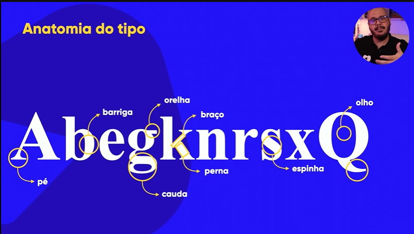
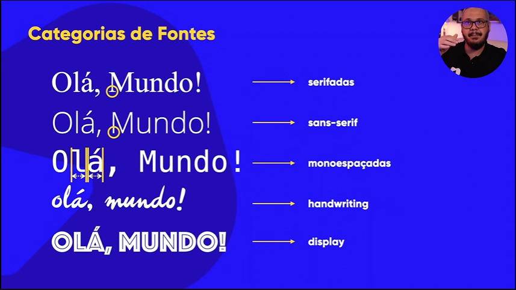

Cores
Psicologia das cores
Harmonia de cores
Se preferir, pode seguir abaixo as dicas resumidas de harmonia de cores.
Apps e Links para servir como ferramentas
Tipografia
-

-

-

-

-
- Google Fonts Download e uso online de fontes
- Dafont apenas Download de fontes
- What Font Is diz quais foram as fontes usadas em uma imagem
- Font Squirrel o mesmo do de cima
- My fonts o mesmo dos dois acima